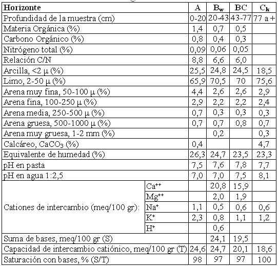

Haplustol típico, limosa fina, mixta, térmica
Capacidad de uso: IIIc
La Serie Constitución es un suelo bien drenado, vinculado a lomas suavemente onduladas, con pendientes que no superan el 1%, ubicadas principalmente al Oeste de la Carta, desarrollado a partir de sedimentos loéssicos. Los primeros 20 cm (horizonte A), poseen color pardo grisáceo oscuro, textura franco limosa y estructura en bloques subangulares y granular. Hacia abajo continúa una capa más arcillosa de aproximadamente 20 cm de espesor (horizonte Bw), de color pardo oscuro, estructura en bloques subangulares medios moderados; barnices húmico-arcillosos escasos y finos. La transición al horizonte Ck es gradual y se encuentra a 64 cm de profundidad. Es un sedimento franco limoso, masivo, con abundante material calcáreo pulverulento en la masa del suelo. Son suelos agrícolas, con buena retención de humedad, siendo su única limitación la climática.
Descripción del perfil típico:
El perfil típico fue descripto a 4 km al Sur de Colonia Caroya, departamento Colón, provincia de Córdoba.
A 0-20 cm; color en húmedo pardo grisáceo muy oscuro (10YR3/2); franco limoso; estructura en bloques subangulares medios moderados y granular; friable en húmedo; ligeramente plástico; no adhesivo; límite inferior abrupto, suave.
Bw 20-43 cm; color en húmedo pardo oscuro (7,5YR3/2)); franco limoso; estructura en bloques subangulares medios moderados; friable en húmedo; ligeramente plástico; ligeramente adhesivo; barnices húmico arcillosos, escasos y finos; límite inferior claro suave.
BC 43-77 cm; color en húmedo pardo a pardo oscuro (7,5YR4/4)); franco limoso; estructura en bloques subangulares medios débiles a masivo; friable en húmedo; ligeramente plástico; no adhesivo; vestigios de barnices arcillosos; límite inferior abrupto, suave.
Ck 77 cm a +; color en húmedo pardo (7,5YR4,5/4); franco limoso; masivo; abundante calcáreo pulverulento en la masa del suelo.
Cuadro Nº10
Datos analíticos Serie CONSTITUCIÓN
Situación: Latitud: 31°04'S Longitud: 64°02'O Altitud: 460 m.s.n.m.

|